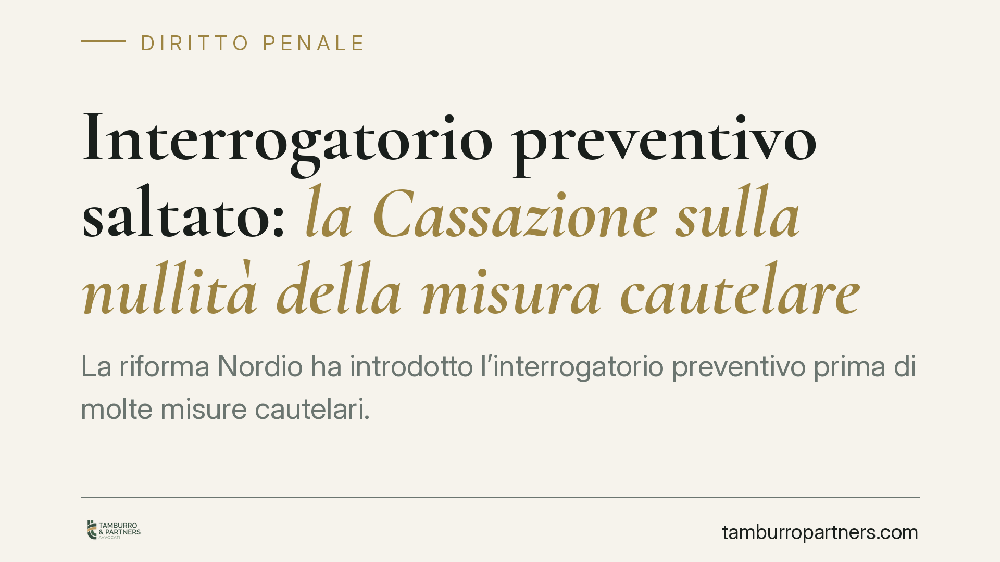

Interrogatorio preventivo saltato: la Cassazione sulla nullità della misura cautelare
La riforma Nordio ha introdotto l'interrogatorio preventivo prima di molte misure cautelari. Ma cosa accade se il giudice lo omette? Un recente orientamento di legittimità chiarisce che non basta denunciare la violazione formale: occorre allegare un pregiudizio concreto alla difesa, con un onere di motivazione rafforzato. Un passaggio delicato, soprattutto quando l'indagato ha scelto il silenzio nell'interrogatorio di garanzia.

Il fatto
La legge n. 114/2024 (c.d. riforma Nordio) ha innestato nel codice di procedura penale un nuovo passaggio: prima di applicare determinate misure cautelari personali, il giudice deve sentire l'indagato. È l'interrogatorio preventivo disciplinato dall'art. 291, comma 1-quater, c.p.p.
La domanda operativa è immediata: se quel confronto viene omesso, la misura cautelare poi disposta è automaticamente nulla? Un recente orientamento di legittimità risponde in senso negativo, spostando il baricentro dalla forma alla sostanza del pregiudizio subito dalla difesa.
Inquadramento normativo
Occorre tenere distinti due istituti che spesso vengono confusi.
L'interrogatorio preventivo (art. 291, comma 1-quater, c.p.p.) si colloca *prima* dell'emissione dell'ordinanza cautelare: il giudice, su richiesta del pubblico ministero, sente l'indagato in contraddittorio anticipato. L'interrogatorio di garanzia (art. 294 c.p.p.), invece, interviene *dopo* l'esecuzione della misura ed è funzionale alla verifica della permanenza delle esigenze cautelari.
Il nuovo adempimento non ha portata generale. L'interrogatorio preventivo non è previsto quando ricorrono esigenze cautelari qualificate — tipicamente il pericolo di fuga o di inquinamento probatorio, oppure situazioni che renderebbero il preavviso incompatibile con la finalità della misura. Resta ferma la disciplina specifica delle altre forme di intervento cautelare, come l'audizione per le misure interdittive. In altri termini: l'obbligo di preventivo contraddittorio opera entro un perimetro definito, e il primo accertamento difensivo riguarda proprio se quell'obbligo fosse effettivamente dovuto nel caso concreto.
L'orientamento di legittimità
Si tratta di un istituto entrato in vigore da poco: la giurisprudenza è ancora in formazione e va letta come primo orientamento, non come principio consolidato.
La linea che emerge è la seguente. L'omissione dell'interrogatorio preventivo, quando dovuto, non determina una nullità rilevabile in via automatica. Chi la deduce ha un onere di allegazione rafforzato: deve indicare in modo specifico quale pregiudizio difensivo concreto sia derivato dalla mancata interlocuzione preventiva. Non è sufficiente lamentare la violazione in astratto; occorre spiegare cosa l'indagato avrebbe potuto far valere in quella sede e perché ciò avrebbe potuto incidere sulla decisione cautelare.
Il ragionamento ha una conseguenza pratica che merita attenzione. Se l'indagato, nel successivo interrogatorio di garanzia, si è avvalso della facoltà di non rispondere, risulta più arduo sostenere di aver subito un pregiudizio dalla mancata audizione preventiva. Il silenzio — scelta pienamente legittima — indebolisce però l'argomento secondo cui il contraddittorio anticipato avrebbe modificato l'esito.
Cosa cambia per l'indagato e per la difesa
Il messaggio di fondo è il passaggio dalla forma alla sostanza. La semplice irregolarità procedurale non apre più, da sola, la porta all'annullamento della misura.
Per la difesa questo significa costruire la censura in termini concreti e documentati. Non conta soltanto rilevare che un adempimento è stato saltato; conta dimostrare che quel passaggio avrebbe avuto un peso reale sulla valutazione del giudice.
Si apre inoltre un tema di coerenza strategica. La scelta sul se e come rispondere nell'interrogatorio di garanzia non si esaurisce in quella sede: può riverberarsi sulle successive impugnazioni cautelari. Due decisioni che un tempo potevano sembrare separate risultano oggi collegate.
Cosa fare in concreto
- È opportuno verificare, come primo passaggio, se nel caso specifico l'interrogatorio preventivo fosse effettivamente dovuto o se ricorressero esigenze qualificate che ne escludono l'obbligo.
- Qualora l'adempimento risulti omesso pur essendo dovuto, la deduzione di nullità va costruita indicando in modo puntuale il pregiudizio difensivo concreto.
- La condotta da tenere nell'interrogatorio di garanzia andrà valutata anche alla luce dei suoi effetti sulle successive censure cautelari.
- La strategia impugnatoria andrà calibrata sul materiale probatorio concretamente disponibile, non sulla sola irregolarità formale.
- Trattandosi di orientamento ancora in evoluzione, è consigliabile monitorare gli sviluppi della giurisprudenza di legittimità sull'istituto.
Contributo informativo a cura di Tamburro & Partners Avvocati - Avv. Giuseppe Tamburro. Non costituisce parere legale.
Ogni condominio ha una storia a sé.
Se gestisci un'amministrazione e vuoi un confronto su una specifica questione condominiale, scrivi allo studio. Ti rispondiamo entro un giorno lavorativo.